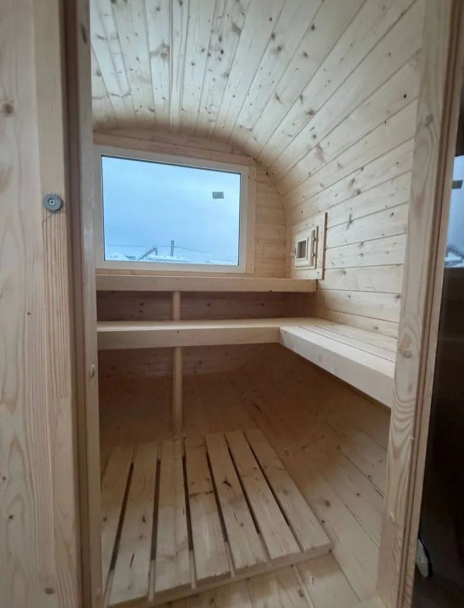

Считаем по километражу без платных участков дороги: км × тариф + 2 000 ₽. Доставка в любой город России и в Казахстан. Оплата — после установки и приёмки на вашем участке.
| Километраж | Тариф | Плюс фикс. |
|---|---|---|
| до 1 000 км | 65 ₽/км | 2 000 ₽ |
| свыше 1 000 км | 70 ₽/км | 2 000 ₽ |
Если клиент называет адрес размыто («район», «под городом») — уточняем город или населённый пункт: от этого зависит километраж.
| Город | Км | Доставка |
|---|
Километраж рассчитан по автомобильным маршрутам; для точной суммы менеджер проверяет маршрут без платных участков.
Транспорт не повышенной проходимости, бригада собирает баню прямо на месте. Стоимость доставки считается отдельно, сборка оплачивается отдельно: «Квадро» — 10 000 ₽ (1 день), «Квадро» с верандой — 25 000 ₽ (2 дня), «Танк»/«Овал» — 25 000 ₽ (2 дня), «Танк»/«Овал» с верандой — 35 000 ₽ (2 дня).
Вся сумма прописана в договоре и оплачивается после установки единой суммой. Нужно электричество для инструмента; проживание мастеров при двухдневной сборке оплачивает и обеспечивает организация.
Привозим готовую баню на КамАЗе с открытым кузовом — если ширина бани до 2,40 м. Манипулятор для снятия с машины и установки на постоянное место нанимает и оплачивает заказчик, водитель помогает поставить и отрегулировать. Бетонные блоки привозим вместе с баней. Всё, что шире 2,40 м, собирается на участке (вариант 1).
Нужен проезд для тяжёлой техники: без низких проводов, узких ворот, с местом для разворота. Габарит по ширине — до 2,40 м; шире — только сборка на месте.
г. Ижевск, ул. Пойма, 32. Погрузка манипулятором — силами производителя. Забрать можно в любой удобный день по согласованию с менеджером с 08:00 до 18:00.
Прицеп «БАРС» 3,5×1,5 м — усиленный двухосный с опорами и буксировочным колесом. Баня 3 или 4 м любой комплектации, планировка на выбор.
120 000 ₽ стоимость прицепа, 100 % предоплата
Плюс три стропы по 2 000 ₽ для фиксации бани на прицепе. Производитель прицепов — «БАРС», доставка по всей России.
